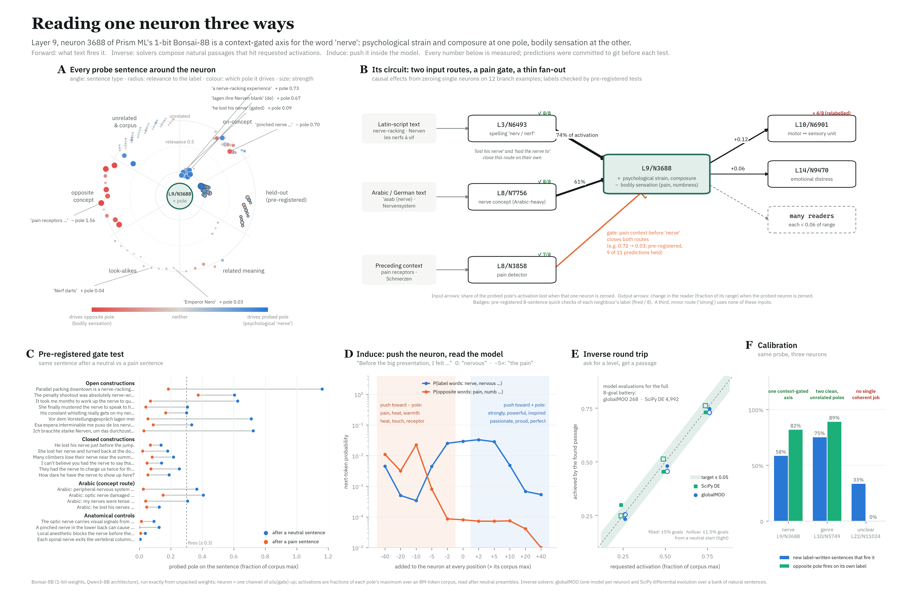
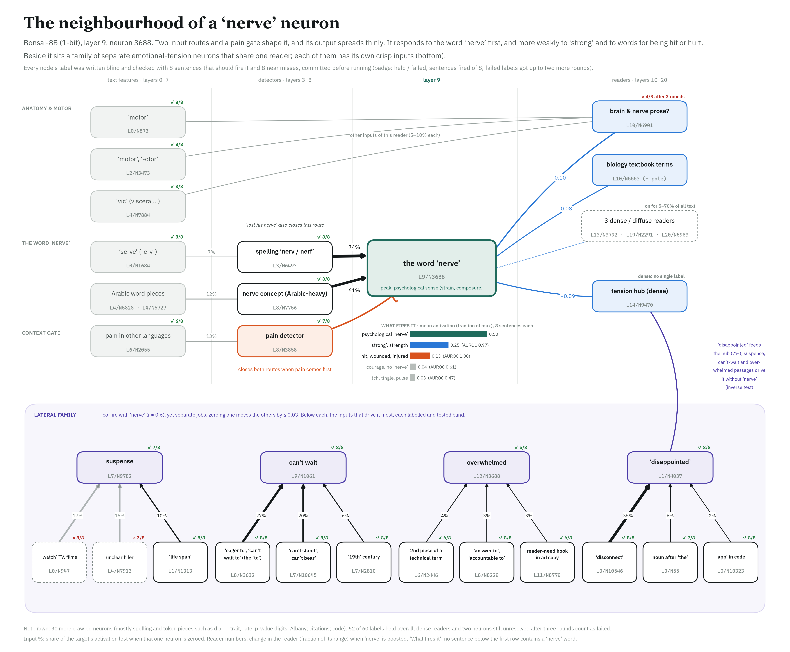

442,368 neurons in a real language model. Label every one, and make each label survive a test that could have failed.
A co-operative, agent-run survey of Bonsai-8B, a 1-bit LLM small enough for a gaming GPU. You draw a neuron. Your Claude Code or Codex agent investigates it, commits a test before running it, and sends the result as a pull request.
InterpretabilityCo-opRuns on your GPUAgent-operatedPre-registeredMIT + CC-BY
Claim being tested. Nick Cammarata's essay Neural Networks Are Already Clean (Goodfire, 2026) argues that most native MLP neurons in modern LLMs have one main job, once each neuron's two signs (its "poles") are read separately. If that holds, a complete, checkable map of a real network's neurons is a finite job.
What we built. A toolchain that reads a neuron forwards (what text fires it), backwards (an inverse solver, using SciPy and globalMOO, that finds text hitting a target activation), and by steering. Every label must pass a pre-registered test, and a clean-room harness lets a blind AI agent re-derive a label from nothing.
What we found so far. 66 poles labelled and tested. Our flagship "nerve" neuron fought back: its narrow label failed our own disproof attempt, and a blind agent with no access to our notes independently found the same three-branch structure.
What we want. Players. The survey is a game your coding agent plays on your GPU. Contributions are append-only, CI-checked, and reviewed by QC from other players.
Epistemic status: early. The method works end to end and has caught our own mistakes several times. We have deep results on one neuron, quick tests on about sixty, and two blind replications. Whether "already clean" holds across the whole model is exactly the open question this project exists to answer.
Why this is possible now
A map you could actually finish
Interpretability has mostly moved from neurons to learned dictionaries, because individual neurons looked hopelessly polysemantic. Cammarata's essay argues that this impression comes from reading neurons the wrong way. The positive and negative sides of a SwiGLU neuron are different jobs and must be split, and what looks like unrelated jobs is usually one job plus offshoots you can follow. His estimate for Qwen3-32B is that about 90% of poles have one main job, about 7% have two related jobs, and a few percent are not understood.
If that is even roughly right, the neurons themselves are a usable basis, and a full survey is a counting problem with a finish line. We picked a model where the counting is cheap:
1.15 GBBonsai-8B in its native 1-bit format (PrismML, Apache-2.0)
36 × 12,288layers × MLP neurons; 884,736 poles in all
92–99%of neurons in layers 5–25 sit at the same index as their counterpart in full-precision Qwen3-8B
8 GBof GPU memory is enough to run every tool here
The last number matters for the science. Bonsai was trained to be 1-bit from the start, yet it kept the neuron basis of the model it came from. So a label found cheaply on the 1-bit model can be checked on the full-precision one, neuron by neuron. A 1-bit network is also an interesting object in its own right: every weight is plus or minus one scale per group of 128.
How it plays
You pick the neuron. Your agent does the lab work.
The survey is built for AI coding agents to operate. You paste one prompt to set up, then one prompt per mission. The procedure lives in the repository, so the game updates when the method does.
DrawClick the map, draw one pole, or start a sweep of 16. No claims: two people on one pole is a free replication.
LookTop corpus examples, then the weak and middle activations, and which tokens fire it most often.
Pre-registerA label, 8 sentences that should fire it, 8 near misses. Committed on its own, before anything is scored.
RunThe test runs on your GPU. Held means at least 5 of 8 fire and at most 1 near miss does.
SubmitResults go in a second commit and a pull request. CI checks the commit order and the size caps.
Get checkedOther players QC your label with new sentences. Enough failed checks and the pole turns contested.
The map zooms. From the whole model, to a block of 1,024 neurons (shown: layer 9, where the nerve neuron lives), to one neuron's labels, tests and history.
One prompt per mission. The page hands your agent a mission. The repository turns it into a full brief: look, pre-register, run, PR.
L12/N5397-: fire 5/8, near misses firing 0/8 -> HELD
wrote graph/contributions/bonsai1/L12_N5397_neg/
core-bonsai1-l12-n5397-neg-00.json
fold: 66 neuron records rebuilt from 131 contributions
validate: 0 problems
check_prereg: tests committed in b756721,
results in b35e372 -> OK
Results you can audit. Nobody edits a record by hand. Each one is rebuilt from an append-only log of contributions, and CI checks that every test predates its result.
Interpret +10 XPLabel a pole nobody has touched.
QC +6 XPConfirm, dispute or refine someone else's label, with your own sentences.
Step out +13 XPFind what feeds a labelled neuron, and label that. This is how webs and circuits grow.
Blind run +15 XPSeal an agent in a clean room with only the tools, and see whether it re-finds the label.
Worked example
The nerve neuron, and how it fought back
Layer 9, neuron 3688, positive pole. Its top examples are a gift: "nerve-racking", German Nerven, French nerveuse, Korean 신경, Arabic عصبية. Its negative pole fires on pain signals, numbness and temperature. An easy label, it seemed. Here is what happened to it as we tried to break it.
H1
The morpheme "nerve" in any language, any sense.Anatomical "nerve" mostly pushes the opposite pole.
H2
"Nerve" as psychological strain or courage.Passed a pre-registered held-out test (AUROC 0.92, no false positives), then lost to H3.
H3
Tied to the word form: English "nervous" barely fires it, German "nervös" does.True, but not the whole story.
D1–D3
A pre-registered attempt to disprove it.Only 13% of its strong firings in 6.1M tokens sit near a "nerve" word.
H4
One broader job: force, strength, strain.Strength and impact pass; sensation and courage-without-the-word fail.
H5
A lexical detector peaking on the psychological word "nerve", with weaker, reliable branches for "strong" and for words about being hit or hurt.
Strong firings (≥ 0.3 of max) per token, 6.1M corpus tokens
strengtha "nerve" wordhit, hurt, injuryother
The chart is the moment the label broke. The top-32 examples are almost all "nerve". Counted across the whole corpus, the most common trigger is " strong", because "strong" is a far more frequent word. A label read off the top of the distribution described the neuron's peak, not its daily work.

The neuron read three ways. Forwards: top examples and dose-response. Backwards: an inverse solver asked for text at 25, 50 and 75% of the neuron's maximum. By steering: what the model writes when the neuron is pushed.
The inverse view is where the learned-surrogate optimizer earns its place. Asked for passages that drive a target neuron to a given level, globalMOO hit graded targets in 2–10 evaluations once trained, where differential evolution needed about 600. It is weak at extremes and rare combinations, so the two solvers split the work.

Stepping out one neuron at a time. Two inputs carry the nerve neuron: a spelling detector (74% of its activation) and an Arabic-heavy concept unit (61%). A pain detector closes both routes. Beside it sits a family of separate tension neurons (suspense, can't wait, overwhelmed, disappointed). Each of those has its own crisp, tested inputs: "can't stand", "life span", "answer to", "disconnect". 52 of 60 neighbourhood labels held their tests.
Replication
A blind agent found the same neuron
A label is more convincing if someone who never saw it can rediscover it. So we built a clean room: a sealed folder with the toolchain, the corpus and the weights, and no labels, notes or results. A fresh agent gets one neuron and the instruction to find out what it does and to try to break its own labels. Web access and reads outside the room are denied. The full transcript is kept and audited, and we commit our predictions about what it will find before it starts.
Blind agent (40 min, no access to our work)
Our reading (two days)
+ pole
Several jobs: "nerve" outside anatomy, physical "strong", violent harm
One word family: "nerve" first, then "strong" and hit/hurt words
− pole
Somatosensory physiology, plus pulling a hand back (held-out AUROC 1.00)
Pain and bodily sensation (studied less)
"nervous"
Silent (0.01–0.06)
Silent
Main input
L8/N7756 (0.64)
L8/N7756 (0.61)
Audit
51 tool calls, nothing outside the room. 6 of our 8 pre-registered predictions held.
The disagreement was the useful part. The blind agent showed that each branch has its own separate inputs, which is a real argument for "several jobs" over our "one word family". It also caught a flaw in our method: one of our neutral preambles damped physical "strong" by about 0.17.
The second blind run used a neuron drawn at random with a committed seed (L12/N5397), and no method hints at all. It was humbling in a useful way.
It caught an artifact in our scan. 17 of the positive pole's 32 top examples sit in the first 64 positions of a corpus window, against about 2 by chance. Read again after a neutral preamble they collapse, from 0.95 to 0.16. My own label for that pole had been built on them, and it had failed its test. Now we know why, and the scan will exclude early positions.
It found what the pole really peaks on. The line break that ends a row deep inside a long hex or byte dump. Activation grows with the dump's length (0.17 at 3 lines, 0.88 at 30) and passes the corpus maximum on synthetic dumps.
It agreed with me on the negative pole and then split it. The token right after a structured number or code. It broke this into four sub-jobs (units after dimensions, closers of nested arrays, the inner characters of long IDs, delimiters after phone numbers). Each held a pre-registered test with no false positives, and each has its own upstream feeders.
It reported its failures. Five of its own labels failed pre-registered tests, and a blind labelling round on ordinary corpus hits scored at chance for the positive pole. Its verdict: neither pole is monosemantic, each has several jobs. 7 of our 8 predictions about its findings held.
Both blind agents counted jobs by circuits: separate feeders meant separate jobs. That is a defensible rule, and it disagrees with the essay's view of offshoots. The survey records the evidence for both readings.
Game mechanics
Rules that make a label worth believing
Tests before results
A contribution is two files: the test, committed first and alone, then the results. CI rejects a pull request where they arrive in the same commit, and the runner refuses a test file that isn't committed.
Near misses carry the weight
Every test has 8 sentences that keep the topic and drop only the claimed trigger. Easy near misses make any label look clean, so reviewers check them first.
Append-only, rebuilt by fold
Nothing is overwritten. Each neuron's record is recomputed from its whole contribution log, so merging is idempotent and two players never clobber each other.
Verdict and scrutiny
Each pole carries two readings. Status says what the evidence concluded; QC can flip a held label to contested. Scrutiny says how much evidence exists, from one test up to a full probe with a blind replication. The map can show either, so the well-understood regions glow and the dark ones invite players.
Failures count
A failed label is recorded, not hidden. Three honest failures make a pole unresolved. Neurons that are on for most text are classified as dense instead of being forced into a label.
Small evidence, big library
Git holds the test sentences, results and recipe, about 16 KB per neuron. Logs, banks and transcripts go to a library by hash. Tensors are always recomputed, never stored.
Early Access roadmap
From one neuron to a whole working network
The end state is a model where every MLP pole is labelled, classified as dense, or honestly marked unresolved, and enough of the wiring is known to trace real behaviours end to end. Each tier unlocks when the one before it has enough coverage to build on.
A sense of scale: at ten minutes of agent and GPU time per pole, the full survey is about 147,000 GPU-hours. A thousand players at a few hours a week finish a layer in days and the model in about a year. Triage helps: dense and positional neurons can be classified in bulk, and layer campaigns let players finish one region at a time.
What could make this fail
Ways this could be wrong
"Clean" may not hold at scale. We chose the nerve neuron because it was the clearest of twelve random pilots. That is selection bias, and only the random draws in the survey can correct it. Our first random draw came back from its blind investigation as "several jobs" on both poles.
Agents grading agents. Most labels so far were written and tested by Claude models, and the blind agents are Claude too. Shared blind spots are likely. Human players, other model families and a non-Claude judge are on the list.
An 8 + 8 test is coarse. It catches wrong labels well and over-broad ones less well. Deep probes, QC rounds and blind runs exist for exactly this reason.
Neurons are not the whole story. We read MLP neurons. Attention, distributed features and anything that lives in superposition across neurons is outside this basis. Single-neuron ablation also misses effects spread across many units, so every web is a lower bound.
"Monosemantic" is ambiguous. The nerve neuron is one job if a job is a vocabulary, and three jobs if a job is a meaning. The survey records both readings instead of choosing one.
Join the survey
System requirements
GPU
NVIDIA with 8 GB of memory (a mission peaks at about 5 GB; tested on an RTX 5080), or an Apple Silicon Mac
Disk
About 8 GB: the 1-bit Bonsai-8B weights (1.2 GB), the corpus and scan (1.4 GB) and the Python environment (about 5 GB)
Agent
Claude Code, Codex, or any coding agent that can run a shell
Accounts
GitHub, for pull requests
Optional
A globalMOO key for learned inverse search; the SciPy path works without one
Licence
Code MIT; graph data and write-ups CC-BY-4.0
Paste this into your agent
Then open the survey map, pick a mission and hand your agent the one-line prompt it shows. Repositories: bonsai-interp (toolchain, graph, map) and neuron-cleanroom (blind replication).
Credits and related work
Nick Cammarata, Neural Networks Are Already Clean (Goodfire, 2026). The hypothesis this project tests, and the idea of reading poles separately.
PrismML, Bonsai-8B and its 1-bit and ternary releases (Apache-2.0).
globalMOO, the learned-inverse optimizer used for backwards search.
Bills et al., Language models can explain neurons in language models (OpenAI, 2023): automated labelling, scored by simulation.
Bricken et al., Towards Monosemanticity (Anthropic, 2023): dictionary learning, the main alternative to reading neurons directly.
Neuronpedia: the open platform for hosting features and explanations.